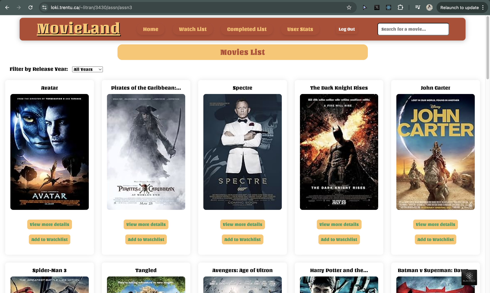

This project is a React-based simple movie browsing site developed as part of university course - COIS 3430: Web Development II: Server-side and Frameworks, and was divided into 2 assignments accomplished througout the Fall semester 2024. Both assignments were built individually under course's instructor and teaching assistant guidance.
Assignment 2 of the course focuses on building backend API to handle endpoints routing, create database tables, along with self-processing PHP pages for authentication, creating account, viewing account information, regenerating API key if requested. Assignment 3 of the course focuses on building a React Front-end to make use of the API from assignment 2, allowing users to do things as mentioned below.
For assignment 2, before the assignment, we had a lab to practice the same task with less endpoints and much smaller database but it already had a significant amount of code repititions. When it came to this assignment, there are a large number of smaller tasks to be completed, more endpoints to be tested, as well as repititions to be reduced. Therefore, this is an assignment where good design choices are important to avoid repeating codes (validating API key for example).
For assignment 3, I encountered lots of difficulties with CORS header, which is needed in the JSON response in the API from assignment 2 in order to make API requests from local app. But with the help of my instructor, the problem was resolved as below. However, she also mentioned that this solution is not ideal when it comes to matter of security. So this might be what I still need to learn more to effectively resolve the problem.
header("Content-Type: application/json; charset=UTF-8");
header("Access-Control-Allow-Origin: *");
header("Access-Control-Allow-Methods: *");
header("Access-Control-Allow-Headers: *");
Another challenge I encountered is that the columns for production companies and genre in the data for the movies table (provided by my instructor) contain JSON objects, which basically means the data isn't normalized, and cannot be used directly to filter the movies (by genre or production companies) or display in the movie details part. I know that I need to split that data out into its own tables (a genre table, and a movie_genre table for example) using a one-off script as she mentioned it in the Readme file of the assignment, but my problem is I don't know how to this because it wasn't part of the course. I tried to do it by following some instructions on Youtube as well as other online sources but still didn't work. So I skipped this part as the assignment had deadline and I didn't have enough time to keep trying. I'm still trying to figure out how to do this.